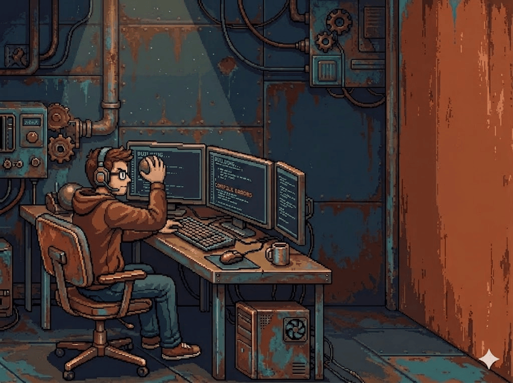

Multi-terminal
Run Claude Code, GitHub Copilot, CodeWhale, Reasonix, and OpenCode side by side in one window. Switch between AI assistants instantly with tabs.
One desktop app. All your AI coding terminals.
Manage multiple projects with integrated AI terminals — Claude Code, GitHub Copilot, CodeWhale, Reasonix, and OpenCode — all in one window.
Download for WindowsRun Claude Code, GitHub Copilot, CodeWhale, Reasonix, and OpenCode side by side in one window. Switch between AI assistants instantly with tabs.
Browse projects in the sidebar, edit files with the built-in Monaco editor, and track git changes — all without leaving the app.
Electron 35 + React 19 + xterm.js. Native terminal performance with zero lag, instant tab switching, and hardware-accelerated rendering.

Windows 10+ · Node.js 18+
Download for WindowsSee SETUP.md for full installation guide.